De 2 a 6 años · Español · Català · English
Aprender jugando, con calma
Números, letras, formas, colores, palabras, música, mates e inglés con Tuni, un bebé atún que lo explica todo con su voz. No hace falta saber leer.

- Sin anuncios
- Sin registro
- Funciona sin conexión
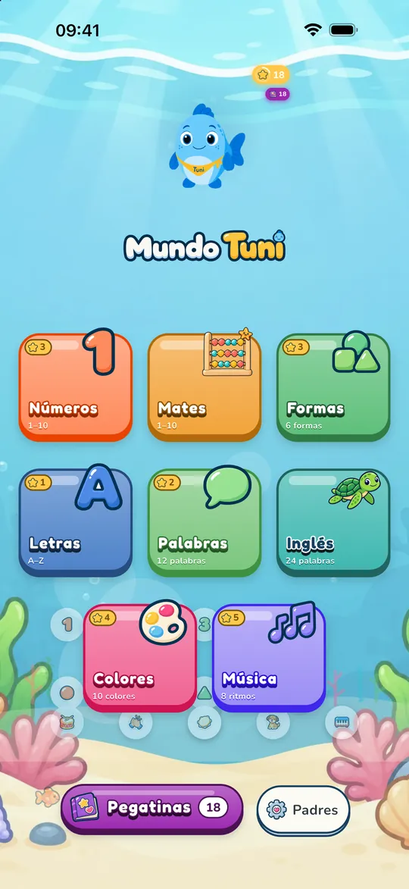
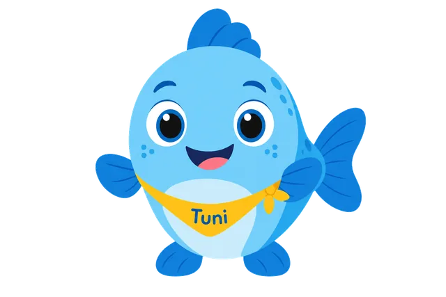
Hecha para los más pequeños, y para quien los cuida
-
Sin anuncios ni sorpresas
Ni anuncios ni registro. Las compras y los ajustes están detrás de una puerta para adultos.
-
Para quien aún no lee
Tuni guía cada juego con su voz: en español de España o de Latinoamérica, en catalán o en inglés americano.
-
A su ritmo
Sin rachas ni cuentas atrás. Si quieres, pones un tiempo de juego y Tuni se despide con calma al llegar.
-
Sus datos, en casa
El progreso se queda en tu dispositivo. La app no pide el nombre ni la fecha de nacimiento de tu peque.
Muchas apps infantiles están hechas para que no paren. Mundo Tuni está pensada para terminar con calma.
La Academia Americana de Pediatría explica que muchas plataformas se diseñan para alargar el uso: reproducción automática, premios frecuentes, anuncios. Mundo Tuni no tiene anuncios, rachas ni cuentas atrás, deja fijar un tiempo de juego y termina con un final tranquilo. Y las guías pediátricas piden, ante todo, poca pantalla y, si se usa, acompañada.
Ocho mundos para explorar
Más de 190 actividades en el catálogo completo. Lo que aparece depende de la edad que elijas.
-
Números
Contar objetos, trazar cifras y emparejar.
-
Letras
De la A a la Z, con la Ñ en español. Trazos y palabras de ejemplo.
-
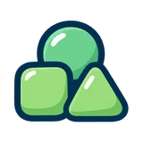
Formas
Seis formas para reconocer, encajar y clasificar.
-
Colores
Diez colores para encontrar, emparejar y pintar.
-
Palabras
Doce primeras palabras con su dibujo y su voz.
-
Música
Ocho ritmos con tambor, campana, palmas y más.
-
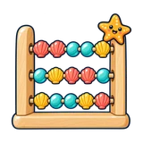
Mates
Para 4 a 6 años: comparar, sumar y restar con objetos, series y ordenar.
-
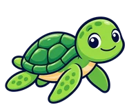
Inglés con Lola
Veinticuatro palabras en inglés con Lola, la tortuga.
Hay contenido gratuito en cada mundo; el resto se desbloquea con una compra única.
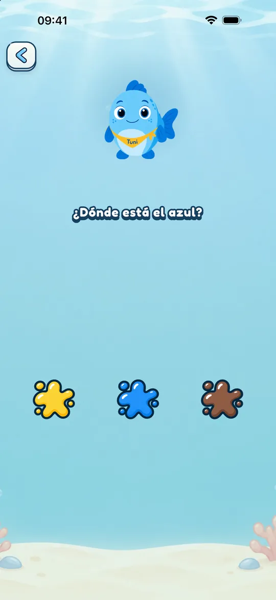
Juegos cortos, claros y tranquilos
Cada juego pide una sola cosa, con la voz de Tuni y sin textos que leer. Los colores son suaves y los sonidos, tranquilos.
- Juegos de escuchar, tocar, arrastrar y trazar
- En los seis mundos principales, una estrella y una pegatina por cada elemento completado
- Subtítulos de Tuni y ayuda para daltonismo, si los necesitas
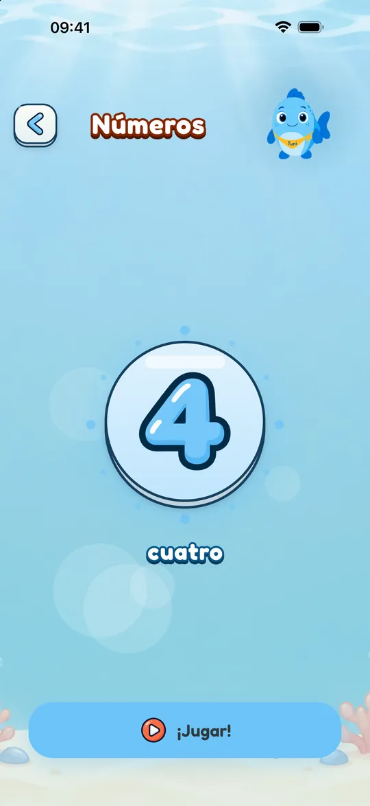
Español · Català · English
En su idioma, y con un amigo que habla otro
Elige el idioma de juego al empezar o cámbialo cuando quieras en la zona para adultos. El español tiene voz de España y de Latinoamérica.
- Español de España
- Español de Latinoamérica
- Català
- English (US)
Lola, la tortuga, enseña 24 palabras en inglés americano cuando el idioma de juego es el español o el catalán. Cuando es el inglés, Lola habla español.
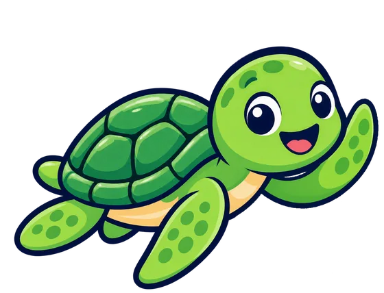
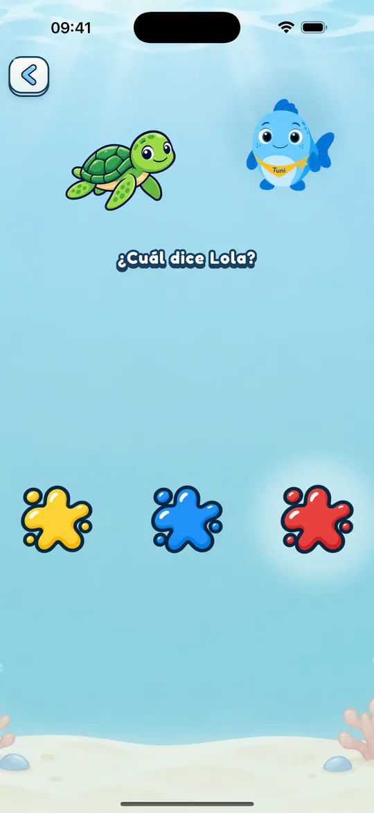
Crece con tu peque
Tú eliges la franja de edad, y la app no la cambia sola. Las actividades y su dificultad se adaptan a cada una.
- 2
Peques
Números del 1 al 5, adivinanzas con dos dibujos y trazos más fáciles.
- 3
Medianos
Números del 1 al 10, mezclas de colores y juegos con el primer sonido de las letras.
- 4–6
Mayores
Todo lo de Medianos y, además, el mundo de Mates.
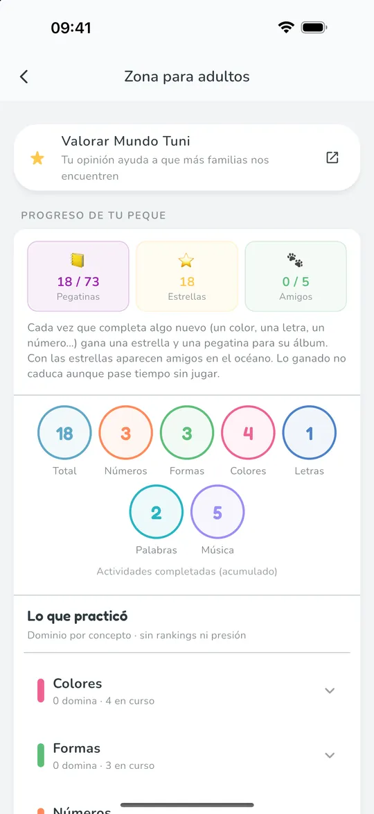
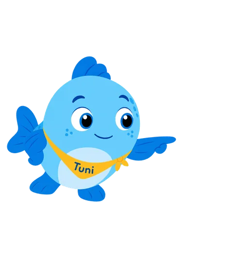
Zona para adultos
Tú decides cómo se juega
Detrás de una puerta para adultos encontrarás su progreso y todos los ajustes.
- Lo que ha practicado, concepto a concepto, sin rankings
- Tiempo de juego de 5, 10 o 15 minutos, con pantalla de descanso
- Idioma, edad, subtítulos y ayuda para daltonismo
- Ocultar el rincón de idiomas, si lo prefieres
Una pegatina por cada logro
Al completar un número, una letra o un color, tu peque gana una pegatina para su álbum. Hay más de 70 en los seis mundos principales.
Del blog: guías para familias
Ideas con fuentes para jugar y aprender con peques de 2 a 6 años.
-
Aprender catalán jugando: ideas para familias que no lo hablan en casa
Aprender catalán para niños jugando: qué dicen el Idescat, el CREDA y la investigación sobre la exposición a cada lengua, e ideas sin presión.
-
Aprender los colores: a qué edad y cómo, sin agobios
A qué edad conocen y nombran los colores los niños, por qué los confunden durante meses y juegos para practicarlos en casa, sin agobios.
-
¿El bilingüismo retrasa el habla? Lo que dicen pediatras y estudios
¿Retrasa el bilingüismo el habla? Qué dicen la AAP y la AEPap, cuánto mezclar es normal y cuándo consultar, con las fuentes y sus límites.
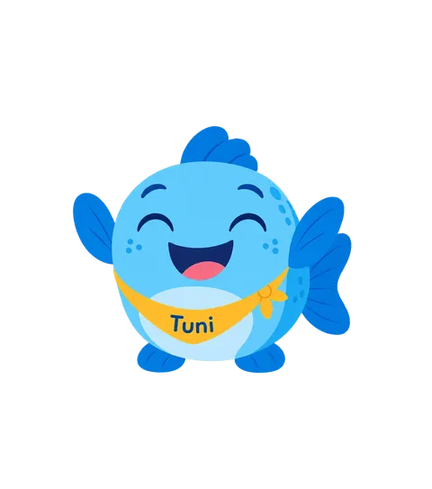
Pruébala gratis
Descárgala para tu peque y probad juntos el contenido gratuito de cada mundo. Si os gusta, el resto se desbloquea con un único pago.
- Sin anuncios
- En español, catalán e inglés
- Para iPhone y iPad